Typica
Coffea arabica var. typicaUna de las más antiguas y base genética de muchas otras. Sensación limpia y refinada.
Floral y ligero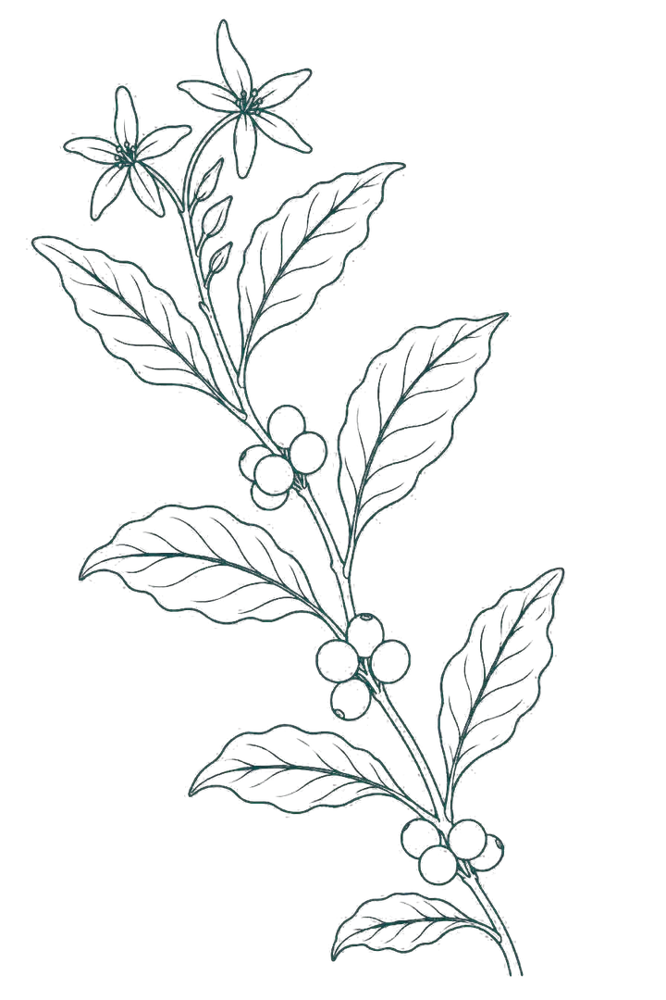
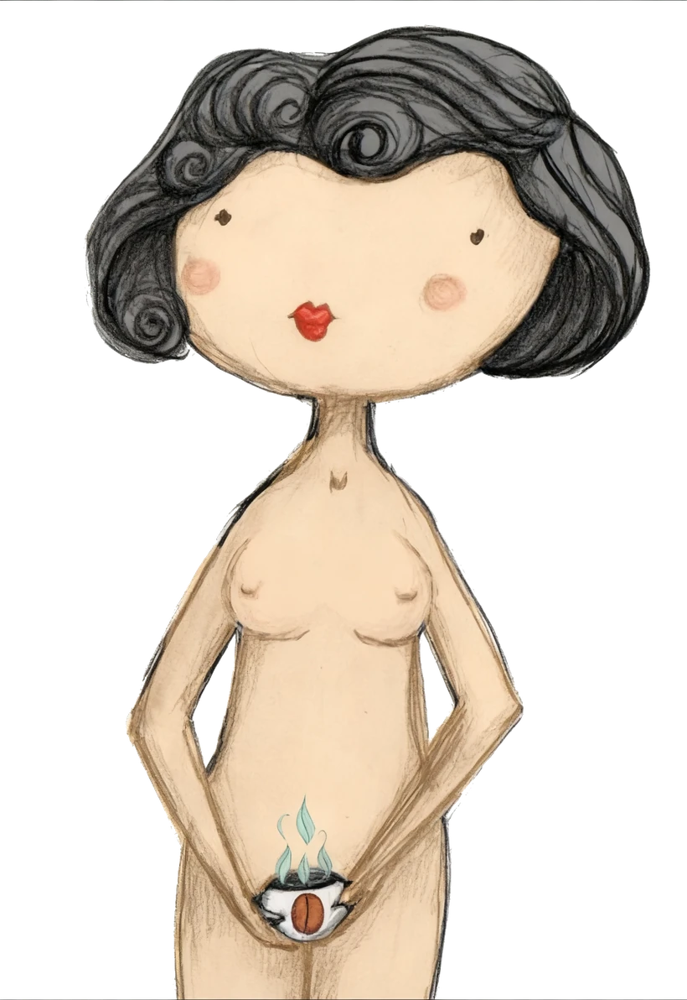
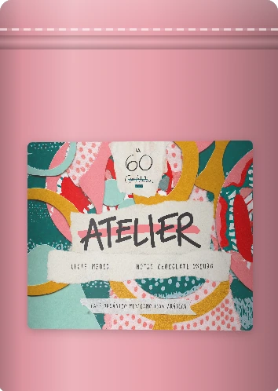
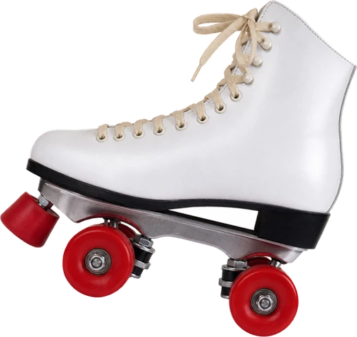
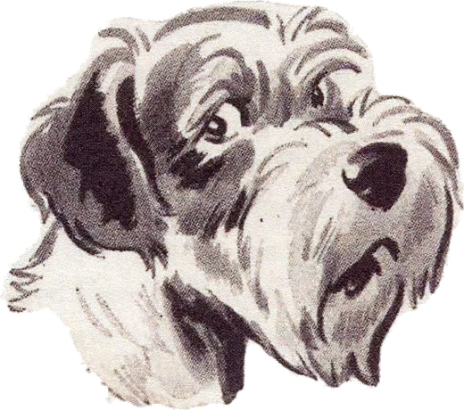
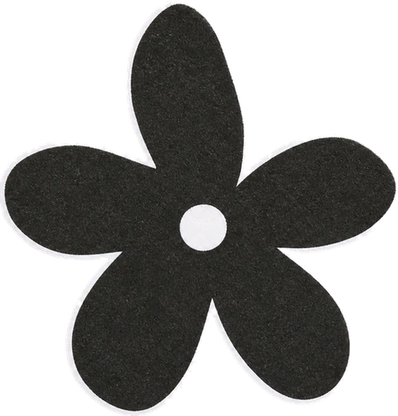
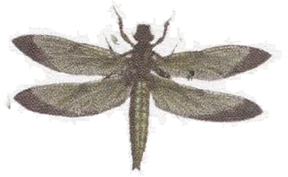
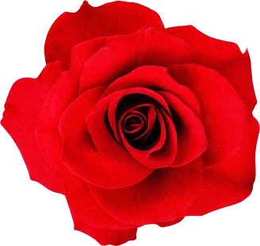
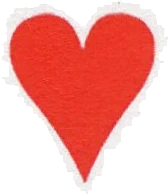
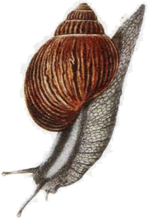

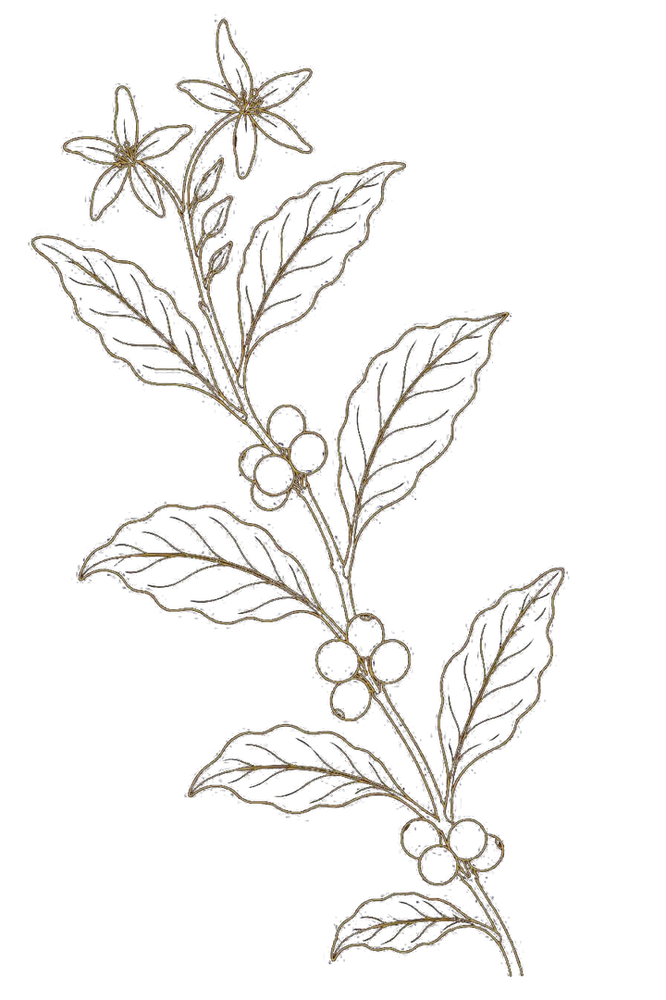
01 — El origen · Soconusco, Chiapas
Nuestro café viene de la zona montañosa del Soconusco, donde el río San Francisco nutre a las comunidades indígenas cafetaleras asentadas en las faldas del volcán Tacaná. Enraizados en Tapachula, Unión Juárez y Cacahoatán, trabajamos mediante comercio justo con cooperativas de productores indígenas, guardianes de esta tierra.
1 400m
Cultivado por encima de los 1 400 metros, bajo sombra natural. A esa altura la maduración es lenta y el grano concentra azúcares y acidez complejos.
84+
Solo las cosechas con puntuación SCAA superior a 84 son elevadas a la categoría de blend. El resto no lleva nuestro nombre.
100%
Arábica de altura mexicano, orgánico certificado. Comercio justo con cooperativas de productores indígenas de Chiapas.
El café no es solo bebida: es lenguaje sensorial que acompaña la pausa.
02 — Las variedades · un sistema de equilibrio
Nuestro café no se construye desde una sola nota dominante, sino desde la interacción entre variedades. Cada una aporta una dimensión distinta, y cada blend es una interpretación de ese equilibrio.
Una de las más antiguas y base genética de muchas otras. Sensación limpia y refinada.
Floral y ligeroReconocida por su alta calidad en taza. Notas a caramelo y nuez, cuerpo sedoso.
Dulce y estructuralMutación natural del Bourbon. Matices cítricos que aportan frescura y balance.
Fresco y ácidoHíbrido de Mundo Novo y Caturra. Cuerpo medio y taza limpia y consistente.
Dulce y equilibradoMutación de Typica, de grano grande. Complejidad aromática y final largo.
Profundo y complejo
Notas principales · dulce · chocolate · nuez.
Matices · florales, cítricos, frutales suaves.
Premium · tueste medio
nuestra mejor mezcla
Excelente retrogusto a chocolate y un sabor completo: aroma, cuerpo y acidez balanceada. Es el único blend que incorpora granos de Maragogipe, la variedad que le da profundidad y ese final largo que se queda.
La nota, con calma
Espresso · 75 % medio + 25 % oscuro
para quien lo toma negro
Sabor más fuerte y sensación más oscura. Está pensado para que incluso el café filtrado sepa parecido a un espresso real: la proporción de tueste oscuro le da cuerpo sin perder la estructura del medio.
Las notas, con calma
Tueste oscuro · French
hasta el segundo crack
El sabor más fuerte que sabemos extraer. Tostamos hasta el segundo crack granos perfectamente seleccionados, y ahí aparece otra cosa: cacao, caramelo y un fondo a madera. No es para todos, y eso nos gusta.
Las notas, con calma
Descafeinado · proceso al agua · tueste medio
la misma pausa, a cualquier hora
Descafeinado por proceso al agua, sin disolventes químicos: el método que respeta el perfil del grano en lugar de aplanarlo. Mismo origen, mismo cuidado, misma taza — solo que sin nada que te quite el sueño.
Las notas, con calma
Cómo se leen las notas
Cuando en una etiqueta dice «notas: cacao, caramelo», no es que lleve cacao ni caramelo. Son los sabores que tu paladar reconoce en compuestos que ya estaban ahí — unos los puso la planta, otros aparecieron en el tueste. Saber de dónde viene cada uno cambia la forma de tomarlo.
La acidez y los matices frutales o florales vienen de la altura, la variedad y el suelo. En Sereno, la manzana roja es acidez málica del grano: ninguna cantidad de tueste la habría creado. Estas notas son frágiles — se pierden con el calor.
El chocolate, el caramelo y la nuez aparecen cuando los azúcares y aminoácidos del grano reaccionan con el calor. Cuanto más se avanza, más se van los matices del origen y más aparecen cacao seco, madera y humo.
Mismo café de Chiapas en los cuatro. Lo que cambia es dónde se detiene el tueste: Atelier lo para pronto para conservar el equilibrio, Darkneo lo lleva al segundo crack. Un solo origen, cuatro lecturas.
Pruébalo primero sin azúcar y sin leche, aunque luego se lo pongas. Huélelo antes del primer sorbo. Y déjalo entibiar: en caliente el aroma tapa el sabor, y casi todas las notas aparecen cuando la taza baja de temperatura.
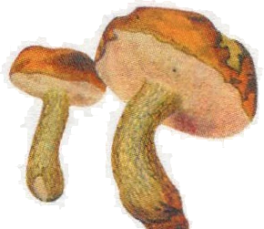
04 — Llévatelo a casa
En grano o con molienda fresca al momento — dinos tu método y lo ajustamos en barra. Puedes pedirlo a domicilio, y lo enviamos a todo México.
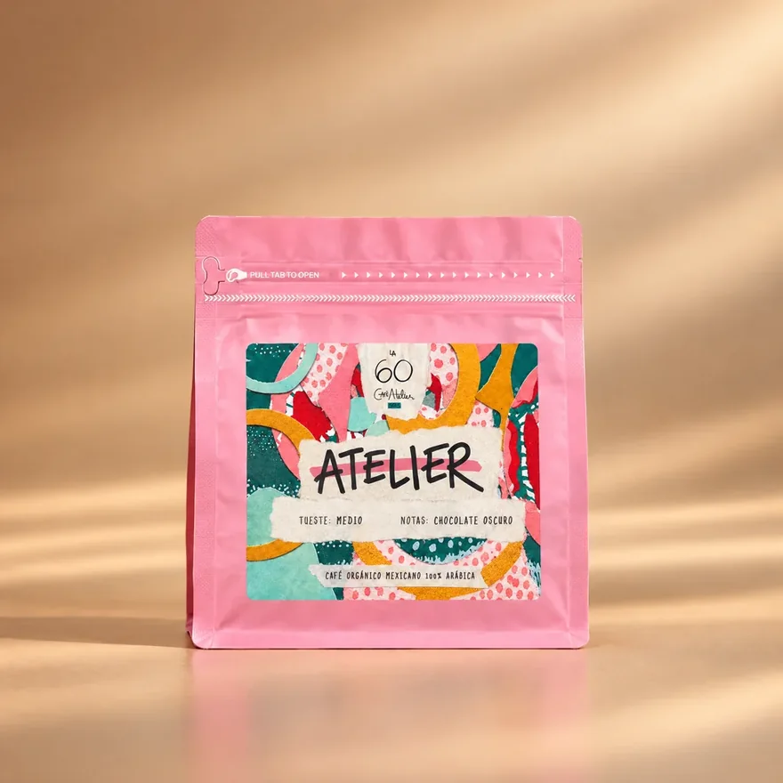
Premium · tueste medio
Balanceado, con Maragogipe. Retrogusto largo a cacao maduro.
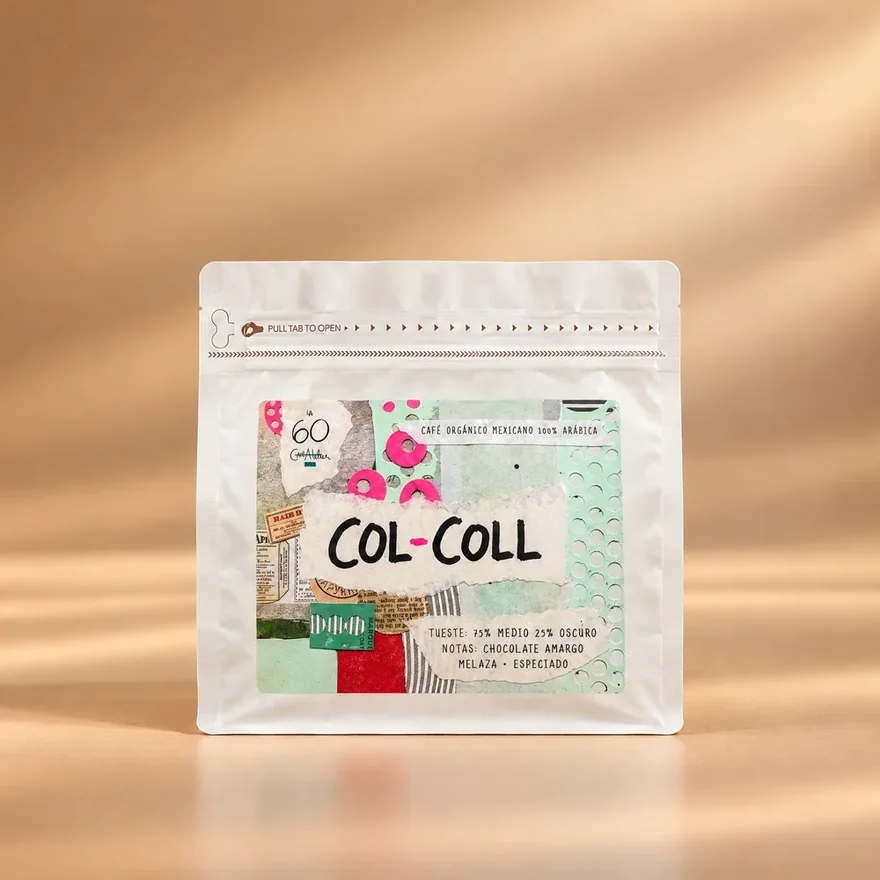
Espresso · 75 % medio + 25 % oscuro
Intenso y profundo. Chocolate amargo, melaza, especiado.
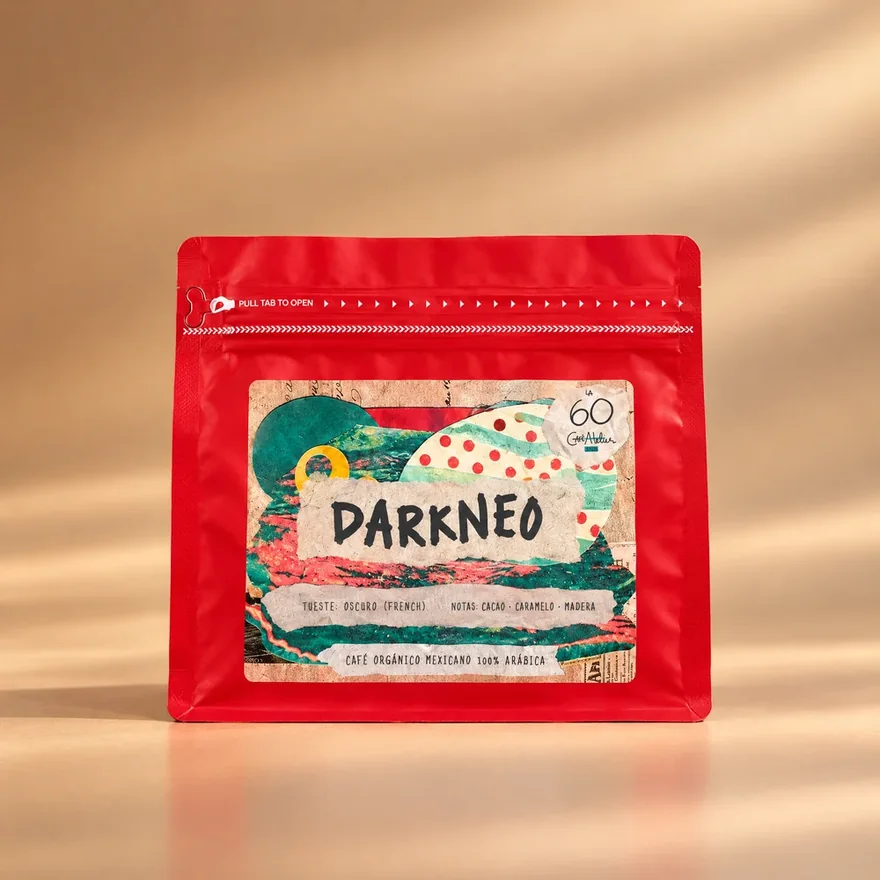
French Roast · 100 % oscuro
Hasta el segundo crack. Cacao, caramelo y fondo a madera.
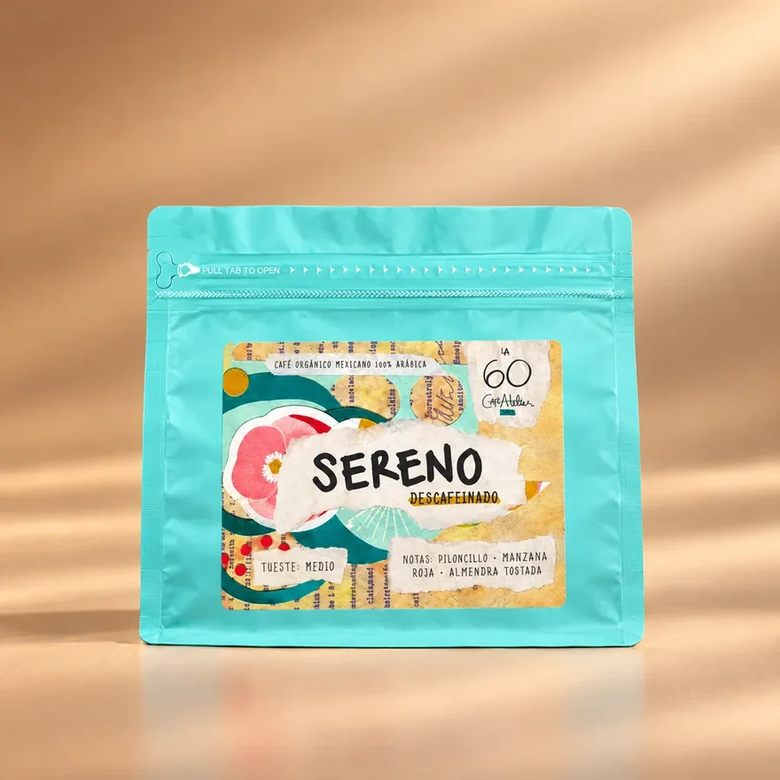
Descafeinado al agua · tueste medio
Piloncillo, manzana roja y almendra tostada. Sin disolventes.
Consúmelo dentro de ese plazo desde el tueste. Después sigue siendo café, pero ya no es este café.
Guárdalo en recipiente cerrado, lejos de la luz. Sin refrigeración — el frío condensa humedad y apaga los aromáticos.
Muele justo antes de preparar. Es lo que más cambia la taza, más que la máquina y más que el agua.
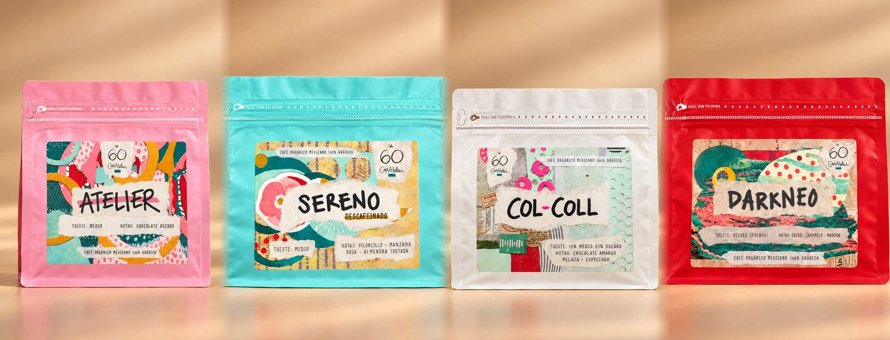
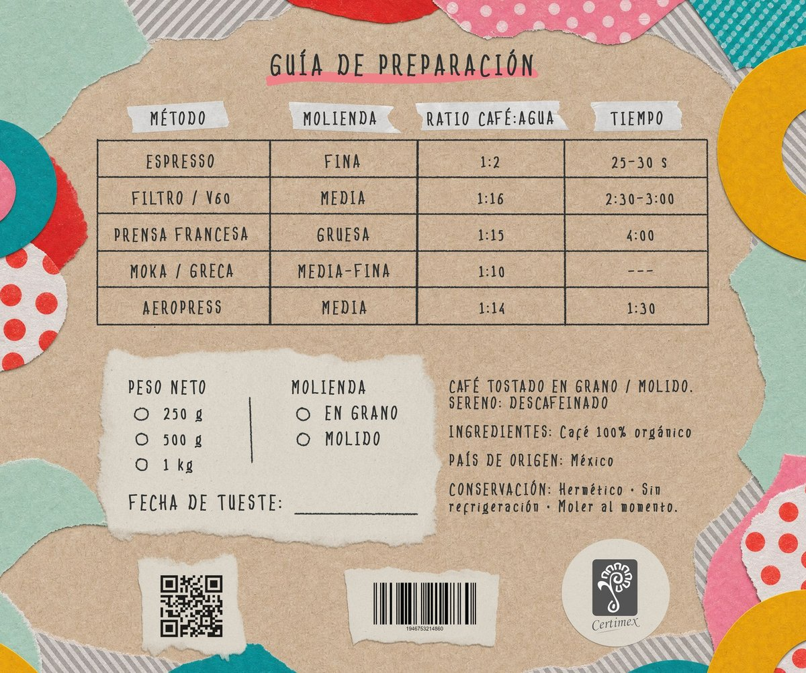
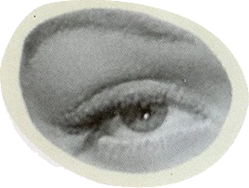
05 — Atelier del mes · café invitado
Edición limitada · solo 250 g
Además de nuestros cuatro blends, recibimos como invitados pequeños lotes de café de especialidad. Están disponibles únicamente en presentación de 250 g, porque no son un producto: son una invitación a probar, conocer y compartir.
Nuevas regiones. Nuevos granos.
Ediciones que no vuelven.
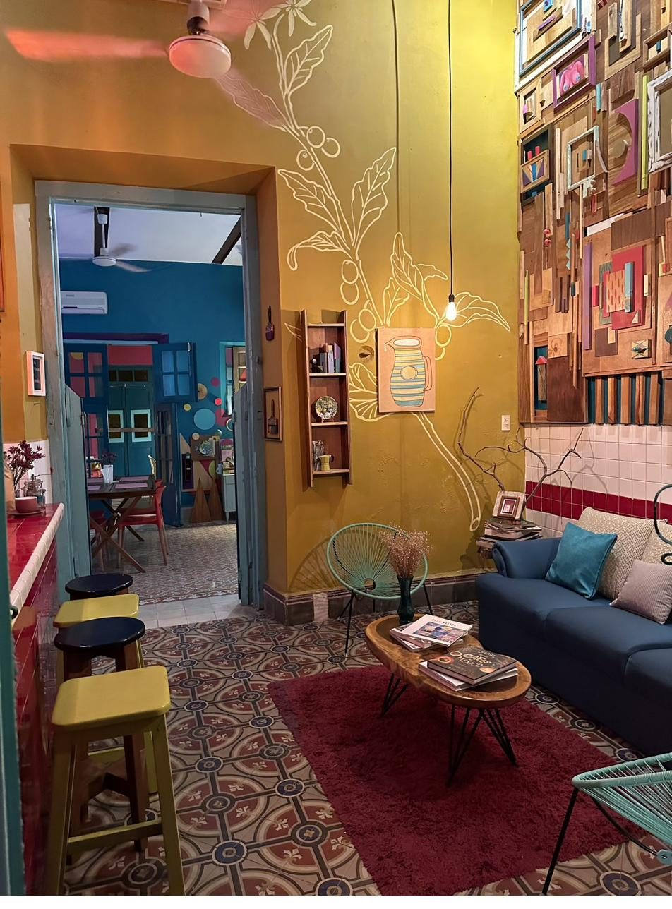
06 — Galería viva · obra en venta
Tatifer4
Creadora y directora artística de LA 60. Su obra no está colgada en el espacio: es el espacio. Los muros, los marcos, las mesas y las tazas salen del mismo gesto — recortar, superponer, dejar que las piezas encuentren su sitio.
Todo lo que ves está disponible, en diferentes precios según el formato y el momento en que se hizo. Si te llevas una, dejamos el hueco: así se sabe que el muro está vivo.
17 piezas
En cuatro series — Eclipses, Anatomías, Abstracto y Capas — con diferentes precios según el formato y el momento en que se hizo cada una.
Entrar al catálogo07 — Objetos de la casa
Cerámica de la casa. No hay dos iguales.
$460Un recorte de Tatifer4 del tamaño de una solapa.
$60Portada intervenida a mano, pieza por pieza.
$400Para mandar por correo o para el refri. Las dos cuentan.
$3008 — El atelier
Solo necesitas sentarte.
La mesa grande se llena de revistas viejas, tijeras, pegamento y recortes que otros dejaron. Llegas, pides un café y te pones a cortar. Nadie corrige a nadie. Al final se pega en el muro o te lo llevas — las dos opciones son correctas.
Incluye materiales. El café va aparte, como debe ser.
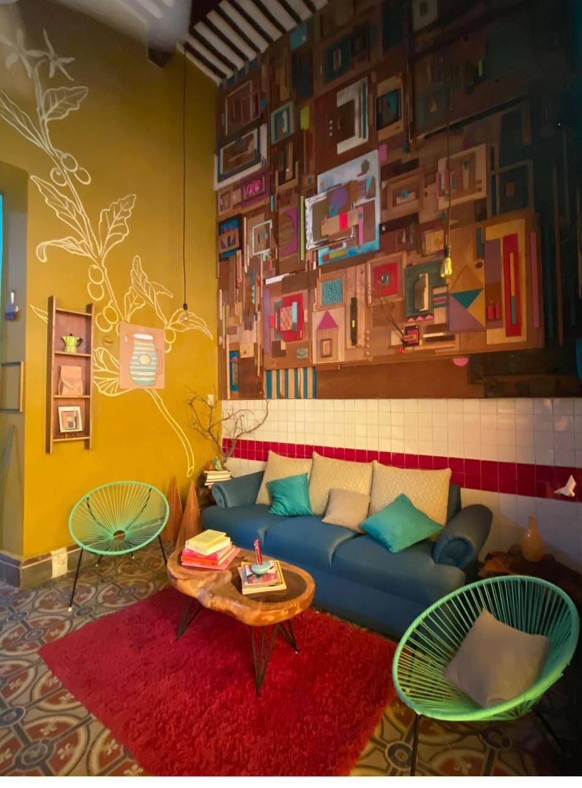
09 — El espacio
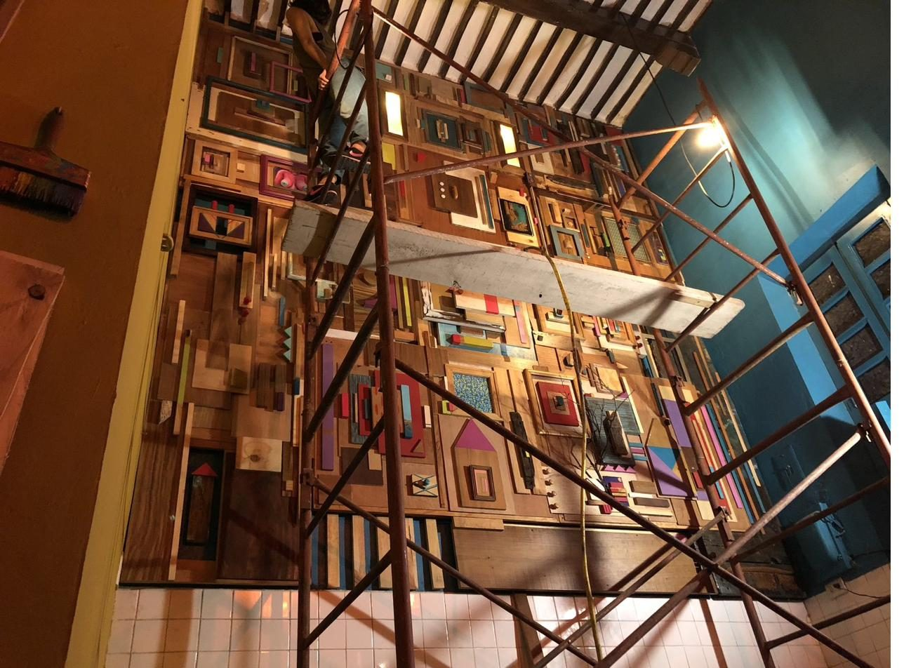
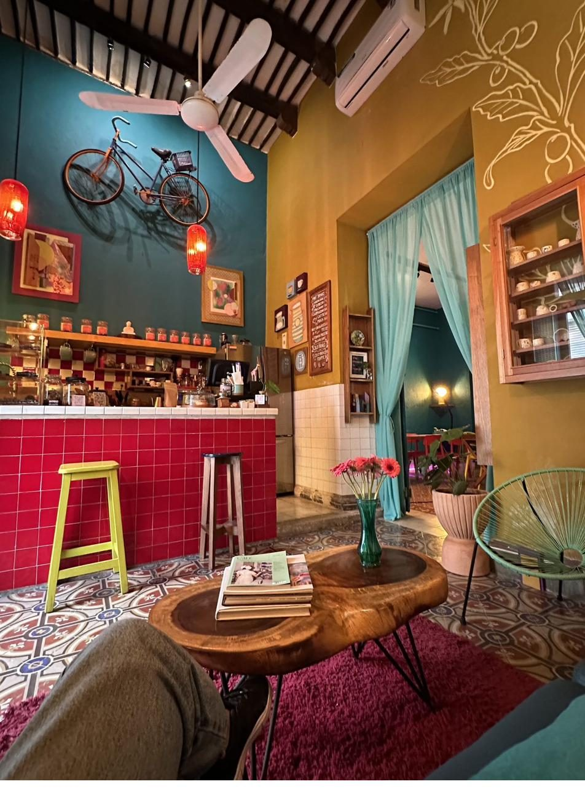
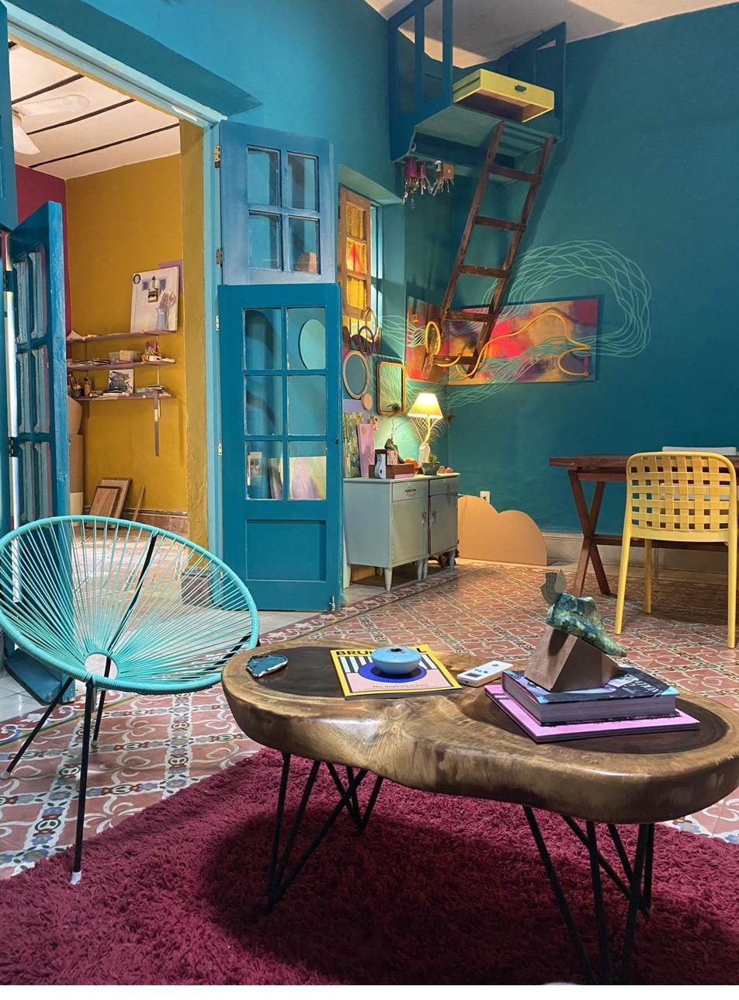
10 — Visita la 60
Te lo molemos para tu método, o te lo damos en grano para que lo hagas tú. Y si no estás en Mérida, te lo mandamos.